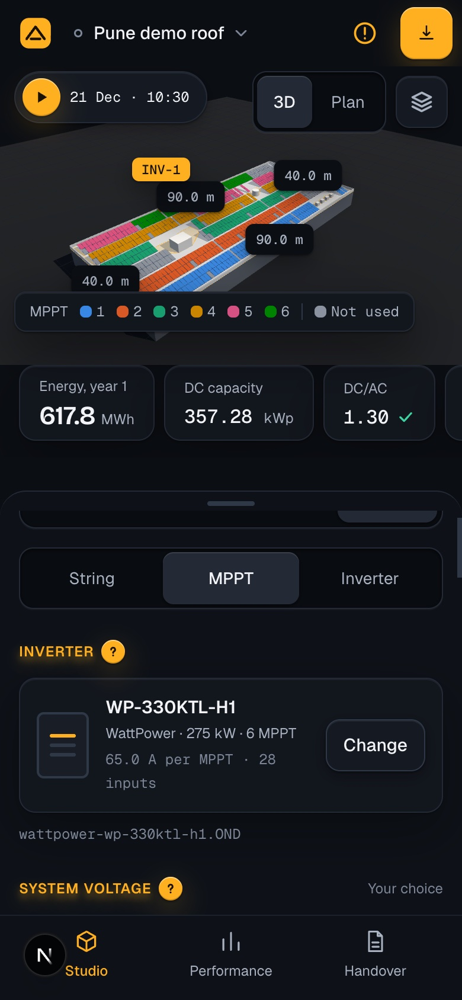
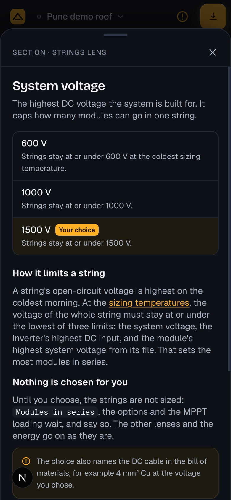
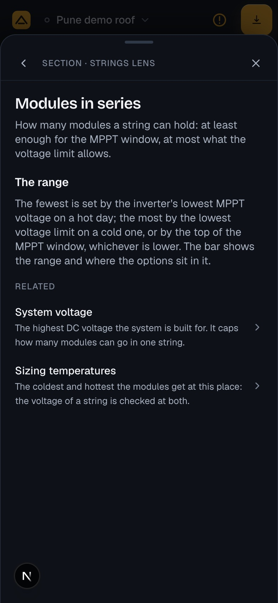
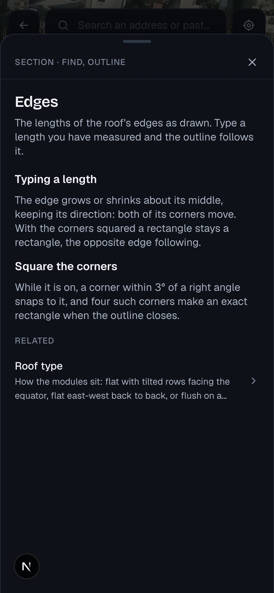

In-app help
A ? beside each section heading of the input panels opens help on what the section is, its choices and what they do, in the app's own words. The core is the help system of the solarlayout app (topics in MDX, each with a key; a typed registry checked by tests; a drawer with Back and related topics; the topic in the address); the look and the places are this app's. The disc and the drawer are drawn here by a prototype in the app itself; the words of the sample topics are checked against the engine. Phone: the drawer comes from the bottom, the whole height.
1 · A ? beside each section heading (three times the screen)

- 1Beside every section heading of the input panels, 6 after its words: a disc of the primary action, its orange, its light from above and its shadow, a ? in its ink. 16 on desktop in a press of 24; 20 on touch in a press of 44. It is there only where the section has a topic.
- 2Hover lifts it as the primary buttons lift; the focus ring is the app's; pressed it sinks. While its help is open it stays held in, ringed, so the eye goes back to what is being explained.
- 3A real button: "Help: System voltage", it says it opens a dialog and whether it is open. The heading's own glow is untouched.
2 · The discs on phone

- 1The inspector's sheet holds the discs: 20 in a press of 44.
- 2System voltage, Modules in series, Options… each heading of the lens.
3 · The drawer from the bottom, the whole height

- 1As the notes and the equipment picker do on phone: from the bottom, up to 48 under the top, with the grip; dragged down or the × closes it.
- 2Scrolls as one: the options, the body, the related topics.
4 · Following a topic

- 1Back (‹) appears once a related topic or a link is followed.
5 · On Find

- 1Find's headings in its sheet have their discs; the drawer comes up over the sheet and the map.